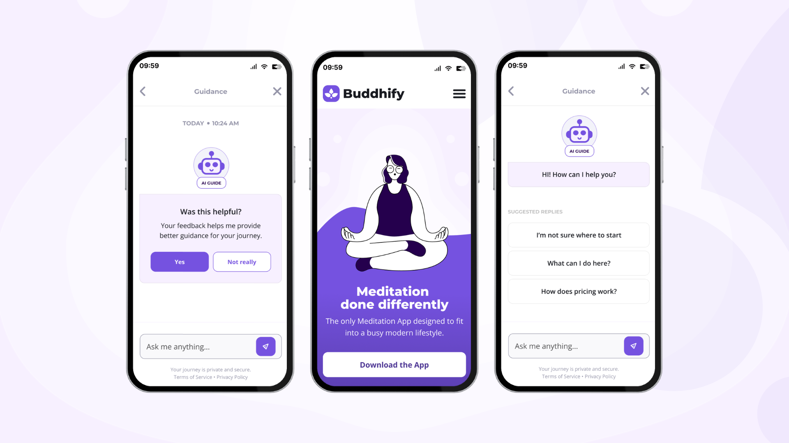
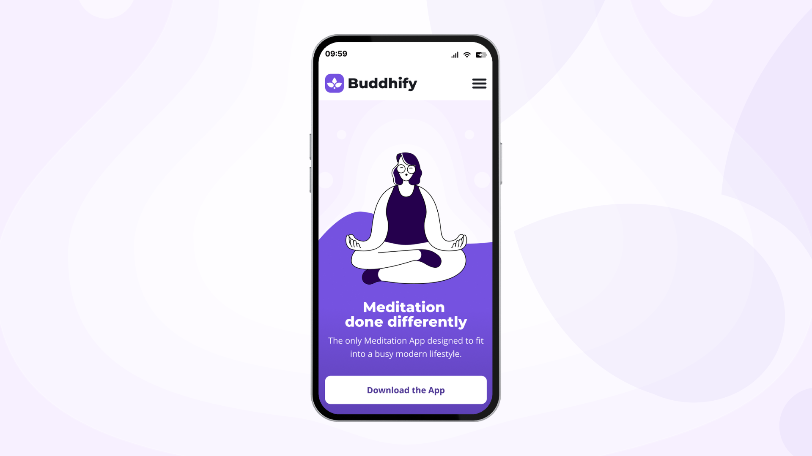
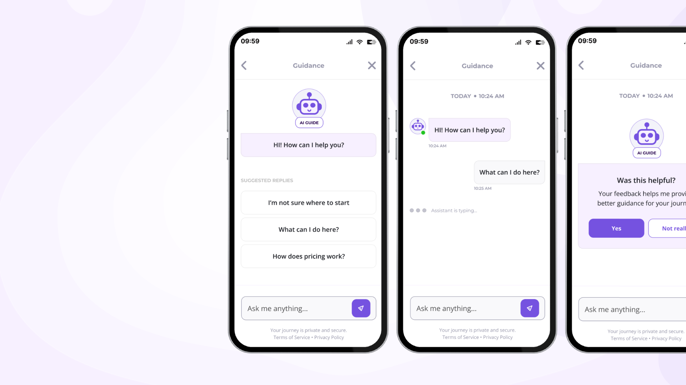
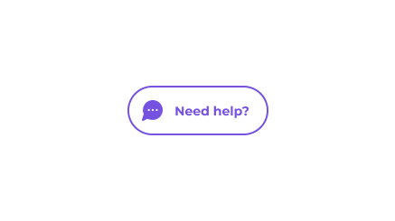

AI Conversational Assistant for Buddhify
UX case study exploring how an AI contextual assistant improves clarity, accessibility, and decision-making in a mobile meditation experience.

Context
Buddhify is a meditation platform designed for users with busy modern lifestyles, offering short sessions adaptable to different moments of the day.
The mobile website functions to communicate the product's values, mission, and unique features. The ultimate business goal remains guiding users to download the app.

Problem Statement
The primary UX issue relates to weak information hierarchy and complex readability on mobile, which leads to:
- High cognitive load
- Difficulty understanding the true value of the product
- Lack of clarity regarding content access and pricing
- Frustration during mobile navigation

AI Conversational Contextual Assistant
The design opportunity focuses on reducing cognitive effort and enhancing immediate comprehension by offering an alternative to traditional scroll-heavy layouts.
The Solution
I designed a contextual AI chatbot integrated into the mobile site, accessible via a persistent floating action bubble. Its core functions include:
- Summarizing long-form content blocks
- Providing instant answers to FAQs (pricing, app access, and usage)
- Strategically highlighting key information
- Guiding users through micro-step decision support

UX Value & Impact
The implementation of the contextual assistant introduces value across the user experience by:
- Drastically reducing overall cognitive load
- Improving immediate comprehension of the product ecosystem
- Providing a more guided, fluid, and seamless navigation experience
- Decreasing user frustration and mitigating mobile drop-off rates
Content Strategy
Tone of Voice (Mindfulness Oriented)
Designed to be fully coherent with the brand's core ecosystem:
UX Writing Principles
- Short, easily scannable sentences and direct phrasing
- Progressive disclosure of complex details
- Strategic use of quick replies and guided flows
- Carefully avoiding an overly promotional tone

Interaction Design
Access is granted via a persistent floating bubble reading “Need help?”. It relies entirely on manual user activation to guarantee targeted support during moments of disorientation—most notably after heavy scrolling or when actively looking for key information like pricing tiers.

Conclusions & Outcome
The assistant does not function as a promotional tool, but rather as an intentional cognitive support layer built exclusively to enhance the user's comprehension of the product.